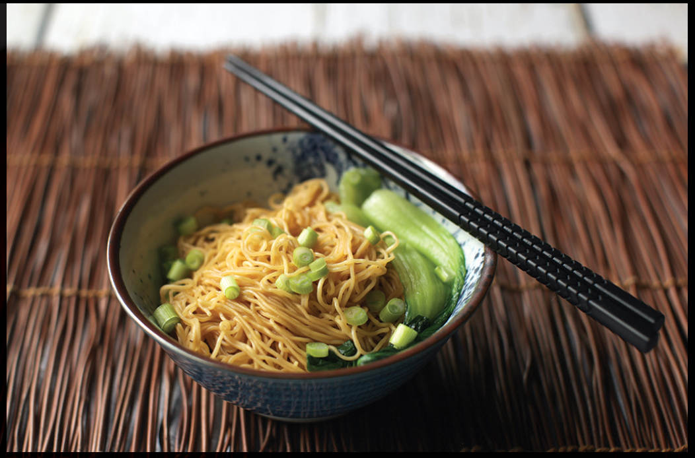

CHINESE-STYLE LO MEIN WITH OYSTER SAUCE, LETTUCE, AND BUTTER
|
Yield Serves 2 |
Active Time 10 minutes Total Time 10 minutes |
This recipe calls for thinner Chinese-style lo mein, typically sold as “wonton noodles,” “Hong Kong chow mein,” or “panfried noodles” in the United States, but honestly, any noodle or pasta you have on hand will do. If using dried or fresh noodles (fresh noodles will have a floury appearance), boil according to package instructions. If they are preboiled (they will have an oilier appearance), boil for just 15 seconds to loosen and heat them up.
INGREDIENTS
8 ounces (225 g) thin egg noodles, preferably fresh
4 to 6 ounces (120 to 170 g) iceberg or romaine lettuce, torn, or baby bok choy, divided into individual leaves
3 tablespoons (45 g) unsalted butter
¼ cup (60 ml) oyster sauce
2 scallions, cut into ¼-inch pieces

This is as simple as noodles get. All it takes is some boiled noodles and greens and a couple of pantry staples.
As opposed to the stir-fried dish typical in the United States, this version is more true to the way it’s typically eaten in China: hot noodles dressed with a sauce or used to sop up the liquid from braised meats. The absolute simplest form of this dish is boiled wonton noodles tossed with oyster sauce and a fat, typically lard. My friends Chris and Steph at Chinese Cooking Demystified insist that lard is an essential flavor, and perhaps if you’re seeking a true Chinese flavor, keeping rendered lard on-hand is a worthwhile use of prime refrigerator real estate. I stock it from time to time.
But late one night as I was preparing for a photo shoot for this book, I realized I didn’t have any lard in my fridge. Then I realized if I don’t have lard, most of you folks at home aren’t going to have lard either (I admire those with that kind of foresight), and then what good is a so-called 10-minute recipe if you have to render lard or seek it out at the supermarket before even starting?
I don’t typically have lard in my fridge, but I do have butter. I tried it on a whim, and it was great! Buttered oyster sauce may well become a staple flavor combination for me.
DIRECTIONS
1 Cook the noodles according to the package instructions, adding the lettuce to the boiling water for the last 30 seconds of cooking (if using bok choy, boil it for a full minute). Drain the noodles and set aside, reserving ½ cup of the cooking liquid. Return the wok to the stove.
2 Add the butter, oyster sauce, and a splash of the reserved noodle-cooking water to the wok and heat over high heat until bubbling and emulsified. Return the noodles and greens to the wok, remove from the heat, and break them up with a pair of chopsticks, turning and lifting them to coat in the sauce. lifting them to coat in the sauce. The sauce should be creamy and smooth, allowing the noodles to slip around. If they are clumping up, add a splash of water. If they are too loose, heat them over high heat for a few moments to reduce the sauce to the right consistency.
3 Divide the noodles and greens between 2 bowls, top with scallions, and serve.